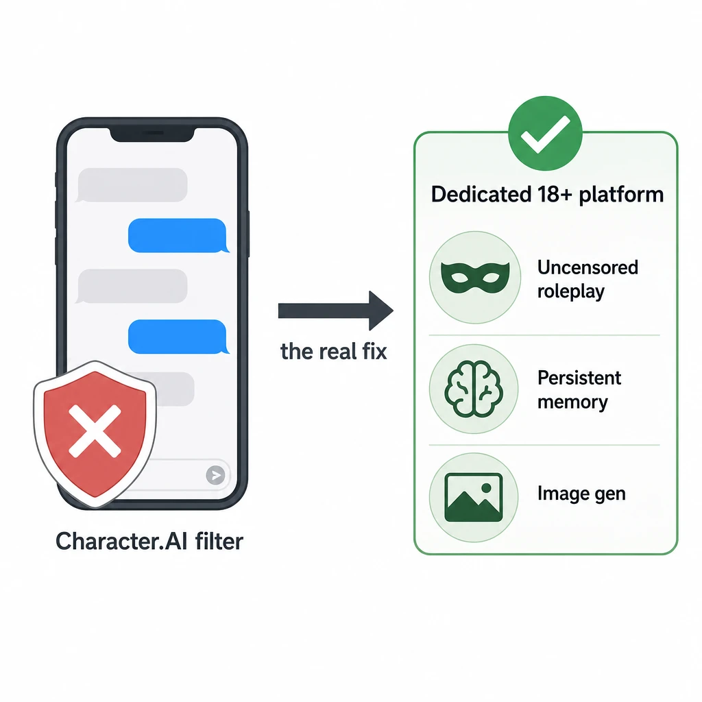
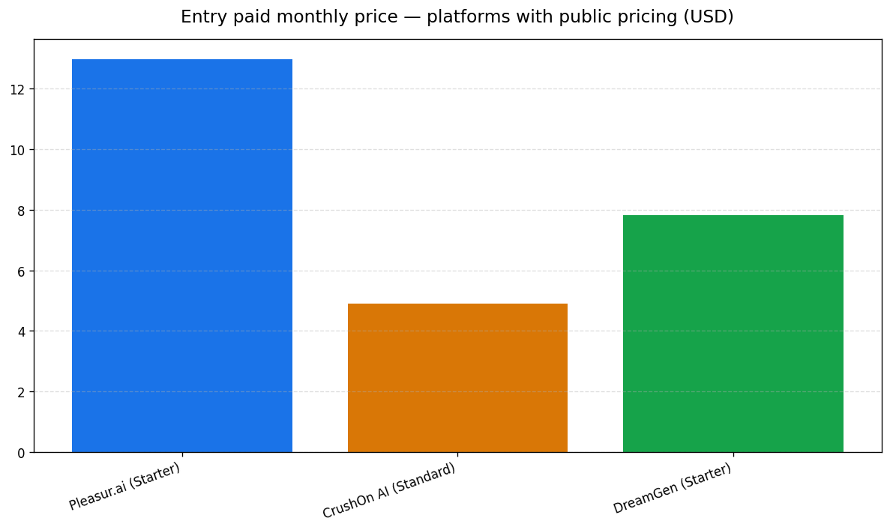
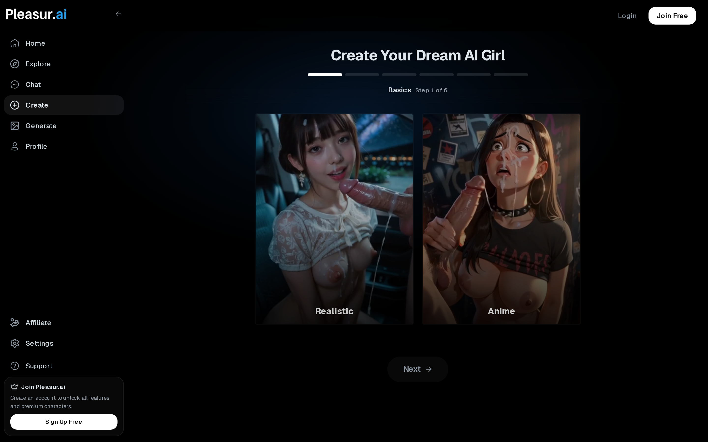
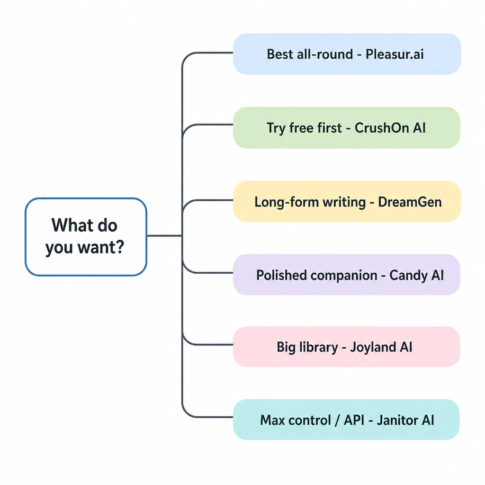

Character AI No Filter: 6 Best Alternatives (2026)
You searched "character ai no filter," hit a wall, and the honest answer is the one nobody on the first page wants to lead with: Character.AI has no genuine no-filter mode, and the mod-APK "hacks" don't work.
Character.AI has no genuine no-filter mode, and bypass hacks don't work — so the real fix is a dedicated 18+ platform built for adult roleplay. The best no-filter alternative is Pleasur.ai: uncensored adult roleplay with persistent memory, in-platform image generation, and no API setup. Candy AI, CrushOn AI, Joyland AI, DreamGen, and Janitor AI round out the field.
Character.AI won't lift its filter, so the right move is a purpose-built 18+ companion platform — and this is the only comparison that puts the six real alternatives in one side-by-side table. The table is next, then what each platform actually does, why the filter exists, and the questions everyone asks.

Does Character AI have a no-filter mode? (the honest answer)
No — Character.AI has no official no-filter mode, and the mod-APK and "jailbreak prompt" tricks circulating on Reddit don't reliably work. When people search this, they mean one thing: let me have adult roleplay without the bot freezing mid-sentence. Character.AI blocks that by design. It isn't a setting buried in a menu that you can toggle off, and no amount of clever prompting turns it into one.
The "no filter apk" route deserves a straight answer, because a real slice of searchers chase it. Third-party APKs and bypass scripts are unofficial. They break with nearly every app update, they ask for permissions a chat app has no business wanting, and they put your account and your device at risk for a result that rarely lasts a week. A Medium piece that ranks for this exact question reaches the same conclusion: there's no uncensored Character.AI mode, and the bypass attempts are "trial and error" that makes the confusion worse. That's the polite version of "stop wasting your afternoon."
![Horizontal editorial diagram for a premium consumer-tech blog illustrating why an unofficial "no-filter" mod-APK or jailbreak-prompt does NOT unlock adult content and instead creates security and account risk. Minimalist flat-vector editorial layout, cautionary but calm mood, generous whitespace. Canvas 3:2, pure off-white background (#FBFBFD) with a barely-perceptible fine paper grain, no border. Composition map: a left-to-right flow showing a dead-end outcome. LEFT third: a generic unofficial-app install card. CENTER: a right-pointing arrow leading to a cluster of small risk badges. RIGHT third: a still-locked chat panel showing the bypass failed. ~12% margin all sides. Per-element specification: the LEFT card is a white (#FFFFFF) rounded-rectangle (16px radius, 1px hairline #EEF0F3, soft shadow) containing a generic download/box glyph and a small warning-triangle corner badge in muted amber (#D9962B) — a generic "unofficial app", not any real brand. A thick charcoal (#2A2D34) rounded arrow leads to a CENTER cluster of three small flat risk badges: a broken-shield glyph, a key/lock-with-exclamation glyph, and a generic person-account glyph with a small alert dot — each in muted red (#D14B4B) on white chips. A second arrow leads to the RIGHT panel: a white rounded-rectangle phone chat card with a single grey bubble (#E4E7EC, no readable text) and a closed grey padlock glyph centered over it, showing the content stayed locked. Micro-details: soft ambient shadows, faint dividers, crisp 1px hairlines. Character & emotion: none — object/diagram composition](../images/character-ai-no-filter-2026/image-1-horizontal-editorial-diagram-f.png)
It also helps to separate three words people use interchangeably. "No filter" suggests anything goes, which is true of no reputable platform. "Uncensored" means adult roleplay is allowed. "Fewer restrictions" is the accurate middle — a platform built for adults that still enforces its own policies. We've untangled the terminology in detail in our no-filter AI chatbot guide; the short version is that you want a platform built for adults, not one promising "no rules."
The frustration is real and it's loud. A subreddit literally named r/CharacterAIrunaways exists to swap free alternatives without the filter, and a much-upvoted Quora thread asks how to bypass the NSFW filter outright. If Character.AI won't unfilter, the next question is why — and the answer points you somewhere better.
Why does Character AI have a filter?
Character.AI filters adult content for compliance and child-safety reasons, not to spite its users — which is exactly why a general-audience app is the wrong tool for adult roleplay. Three pressures drive the filter, and none of them is going away.
The first is illegal-content compliance. Any platform that lets users generate sexual text or images carries hard legal exposure around CSAM, and the only safe posture for a mass-market app is to block adult content broadly rather than risk producing something it can't allow. A blunt filter is cheaper and safer than a precise one.
The second is the Terms of Service. Character.AI's rules prohibit sexual content, full stop. The filter is the enforcement mechanism for a policy the company chose deliberately, and a chat that "freezes" on you is that policy working as intended.
The third is the youngest user in the room. Character.AI is a mixed-age, general-audience product, and a platform that can't reliably tell who's an adult has to moderate for the teenager, not the adult. That single constraint shapes everything downstream.
This is the real divide. A general-audience platform must protect its youngest user; a dedicated 18+ platform can verify age and then serve adults within its own policies. Different products, different jobs. Pleasur.ai is built that way from the start — an adults-only platform with 18+ verification, which is precisely the category Character.AI can't be. For adult-oriented AI roleplay, that's the right tool. With the why settled, here's the practical part — the six platforms actually built for this, side by side.
![Horizontal editorial diagram for a premium consumer-tech blog explaining WHY a general-audience AI chat app filters adult content and why a dedicated 18+ platform is the right tool instead. Minimalist flat-vector editorial layout, calm and explanatory mood, generous whitespace. Canvas 3:2, pure off-white background (#FBFBFD) with a barely-perceptible fine paper grain, no border. Composition map: a left-to-right cause-and-effect chain. LEFT third: three small stacked compliance-obligation cards. CENTER: a converging arrow into a single filter element. RIGHT third: an arrow leading to a green-checked dedicated-platform panel. ~12% margin all sides. Per-element specification: the three LEFT cards are white (#FFFFFF) rounded-rectangles (16px radius, 1px hairline #EEF0F3, soft ambient shadow), each with a tiny mono-line glyph and a short label — top card a small shield glyph, middle card a document glyph, bottom card a card/payment glyph. The three cards feed thin (2px) rounded-cap charcoal (#2A2D34) connector lines that converge into the CENTER element: a rounded grey filter/funnel glyph (#E4E7EC) labeled beneath. A bold charcoal right-arrow leads from the filter to the RIGHT panel: a white rounded-rectangle with a flat circular green check badge (#2E9E6B, white tick) at its top-left corner and a short label. Micro-details: equal card heights, faint dividers, soft drop-shadows as if gently raised off the surface. Character & emotion: none — object/diagram composition](../images/character-ai-no-filter-2026/image-2-horizontal-editorial-diagram-f.png)
Character AI no-filter alternatives at a glance
Here is every platform worth considering for adult roleplay, scored on the five things that decide whether you keep using it — and it's the only side-by-side table you'll find for this question. None of the ranking pages give you one, which is strange, because comparing options is the whole reason you searched.
Read the columns this way. "Filter-free" means built for adult roleplay within each platform's own policies, not "no rules" — illegal content is off the table everywhere. "Memory" is whether the bot carries continuity across sessions instead of forgetting you between logins. "Setup required" is the friction axis no other list bothers to score: can you sign up and chat, or do you need to wire in your own API key first? "Image gen" is in-platform image creation. The price column shows a real number only where the vendor publishes one on its own site.
One note on the price column. Several of these platforms charge for media per use — coins or credits spent per image or per minute of voice — on top of the monthly fee, so the headline number isn't always the full monthly cost. That's why the table scores setup separately and notes where pricing isn't published, rather than ranking on a single figure.

Entry paid monthly tier for the three platforms that publish a price on their own site (2026). Candy AI, Joyland AI, and Janitor AI publish no public price tier, so they can't be charted honestly — see the table for what each does expose.
| Platform | Filter-free (adult roleplay) | Memory | Price | Setup required | Image gen |
|---|---|---|---|---|---|
| Pleasur.ai | Yes — uncensored adult roleplay, built for adults | Persistent across sessions | $12.99 / $27.99 / $49.99 mo (coin-metered media) | None — sign up and chat | Yes (in-platform) |
| Candy AI | Yes — uncensored companion | Persistent companion memory | Paid plans (price not publicly listed) | Minimal | Yes |
| CrushOn AI | Yes — unfiltered character chat | 8K free → 16K paid context | Free $0 / $4.90 / $7.90 mo | Low (in-platform) | Chat/voice-led (not a confirmed core feature) |
| Joyland AI | Partial — adult-leaning | Yes | Paid plans (price not publicly listed) | Low | Not confirmed |
| DreamGen | Yes — uncensored roleplay/story | Context-window based (5K–30K tokens) | $7.83 / $19.35 / $48.30 mo | Moderate (model/credit tuning) | Not a core feature (text/story-led) |
| Janitor AI | Yes — uncensored character cards | Token/context based | Paid plans (price not publicly listed) | High (bring-your-own API key) | No (text chat) |
The table is the summary. Here's the detail behind each row, starting with the top pick.
The 6 best Character AI no-filter alternatives
1. Pleasur.ai — best overall no-filter alternative
Pleasur.ai is the strongest pick for most people: uncensored adult roleplay with persistent memory, in-platform image generation, and zero setup friction. It's built for adults from the ground up, which is the structural advantage Character.AI can't match.
The core of it is the AI Companion Creator. You build a character's appearance, personality, backstory, voice, and kinks in one form, then chat with that character one-on-one — or skip the blank page entirely and remix a community-shared companion. The build is where the experience is decided: a specific backstory and conversation style produce a character that stays coherent over weeks, where a vague one produces wallpaper. Image creation lives right inside the chat through AI Image Generation: describe a scene in the thread, hit generate, and the picture comes back in the same conversation rather than in a separate tool you have to stitch together afterward.
Persistent memory is the real differentiator, and it's the thing adults shopping for a companion ask about most: does it remember me next time? Pleasur.ai's does. Close the tab, come back next week, and the companion still holds the backstory you set and the conversation you left off on — continuity carries across sessions instead of resetting at every login. That's the difference between a companion and a goldfish, and it's what these adults-only platforms are built to compete on.
![Horizontal editorial diagram for a premium consumer-tech blog illustrating persistent memory across sessions — an AI companion that retains your backstory and past conversation when you return later. Minimalist flat-vector editorial layout, warm and reassuring mood, generous whitespace. Canvas 3:2, pure off-white background (#FBFBFD) with a barely-perceptible fine paper grain, no border. Composition map: a left-to-right timeline of two sessions separated by a gap, with a memory store carrying continuity between them. LEFT third: a "Session 1 - today" chat card. CENTER: a rounded memory-store element bridging the two sessions. RIGHT third: a "Session 2 - next week" chat card showing the companion still remembers. ~12% margin all sides. Per-element specification: both LEFT and RIGHT cards are white (#FFFFFF) rounded-rectangles (16px radius, 1px hairline #EEF0F3, soft ambient shadow), each containing two short anonymized chat bubbles — one grey (#E4E7EC) and one teal-tinted (#D6ECEF) — with NO readable text, just clean line-strokes. Between and slightly above them sits the CENTER memory element: a rounded white panel with a flat circular brain/database glyph in muted teal (#2E8C99) and a small green check badge (#2E9E6B)](../images/character-ai-no-filter-2026/image-4-horizontal-editorial-diagram-f.png)
On price: Starter is $12.99, Standard $27.99, and Ultimate $49.99 a month, as listed on the pricing page. Messages are unlimited; media runs on coins on every tier, so there's no unlimited plan. Image generation costs 10 coins each, which means Standard's 5,000 coins buys roughly 500 images a month before you top up — a real number you can budget against rather than a vague "unlimited" promise. Age is verified at signup, which is a green flag, not a hoop. For the fuller breakdown of how it stacks against Character.AI specifically, see our Character AI alternative guide.


2. Candy AI — best for a polished companion experience
Candy AI is a dedicated uncensored companion app — chat, images, voice, and video on a single character, with almost no onboarding. It's the option for someone who wants a girlfriend-or-boyfriend-style relationship out of the box rather than an open-ended roleplay sandbox.
What sets it apart is that the whole product is built around one persistent companion, not a library you graze. You pick or shape a character, and from there everything — the chat thread, the in-app image generation, the voice notes — feeds the same relationship, with the companion carrying memory across sessions so it remembers what you told it last time. The onboarding friction is close to zero: sign up and you're talking, no API key, no model tuning. That tight, multi-modal companion loop is the draw, and it's a genuinely different product than a card-browsing platform like Joyland or a writer's tool like DreamGen.
Where it gets murky is price. Candy AI doesn't publish a public pricing tier — the page behind candy.ai/pricing didn't resolve on our last check, so the real numbers sit behind signup and shift by region. Treat any figure you see quoted in a review with caution, and budget for a card you can't price in advance. It's also companion-focused rather than open-world, which is great if that's what you want and limiting if it isn't. For the safety read most people ask about before signing up, we covered that in is Candy AI safe.
3. CrushOn AI — best free starting point
CrushOn AI is the easiest way to try unfiltered character chat for free, with cheap paid upgrades if you stick around. That makes it the natural answer for the "character ai no filter free" crowd who'd rather test before they pay.
The free tier gives you 100 message credits a month, and the paid plans are genuinely cheap: Standard at $4.90 and Premium at $7.90 a month, per CrushOn AI's pricing page. Memory scales from 8K context on free to 16K on paid, and there's voice. Two trade-offs come with that low price: image generation isn't a confirmed core feature, so this is a chat-and-voice platform first, and the message credits cap heavy use fast once you're hooked. For the full hands-on breakdown, read our CrushOn AI review.
4. Joyland AI — best for character variety and stories
Joyland AI is a character-chat and roleplay platform with a big bot and story library plus adult-leaning content. If browsing a huge catalog of characters is more your speed than building one from scratch, it's the deepest shelf here.
The breadth is the point. Where Pleasur.ai and Candy AI center on one companion you shape, Joyland leans the other way: bots, novels, and full stories you scroll through, plus custom voice, all with memory carried across the conversation and low setup — sign up and pick a character, no API key to wire in. That makes it a strong place to graze when you don't have a specific character in mind and want range over a single deep relationship.
The breadth comes with two real trade-offs. First, the adult content is partial — adult-leaning rather than fully uncensored — so it won't go everywhere a dedicated 18+ platform will; expect it to pull back where Pleasur.ai or Candy AI keep going. Second, image generation isn't confirmed on the platform, so treat it as a chat-and-story experience first, not a place to generate pictures of your character. On price, there's no public tier exposed: joyland.ai/pricing redirects straight to the homepage, so as with Candy AI, you can't budget a number before you sign up. It's a variety play, not an "anything goes" one — pick it for the catalog, not the ceiling.
5. DreamGen — best for long-form writers
DreamGen is built for uncensored long-form roleplay and story writing, with real control over the context window and the underlying model. This is the page sitting at roughly #9 for this query, and it's the one we're out-depthing — so it's fair to give it a clean read.
Pricing is published and confirmed: Starter $7.83, Advanced $19.35, and Pro $48.30 a month, on DreamGen's pricing page, metered by context window from 5K up to 30K tokens. The writer-first design is the appeal — if you're crafting a sprawling narrative, that token control matters. The flip side: setup is moderate because you're tuning models and credits rather than just chatting, and image generation isn't a core feature. It's a tool for people who think in chapters, not snapshots.
6. Janitor AI — best for power users who tinker
Janitor AI offers a huge library of uncensored character cards, but it asks the most setup of any option here. It's the power-user pick: a 15M+-user character-card platform with a large, active community and token-based memory.
The library is the draw, and it's enormous. The catch is the well-known friction — to run most cards you typically bring your own LLM or API key, which is a real technical step most casual users won't want to take. There's no public price tier, and there's no image generation; this is text chat. If wiring up your own model for maximum control sounds like a feature rather than a chore, it's your platform. If it sounds like homework, it isn't. We compared the field around it in our Janitor AI alternatives guide.
Picked a platform? A few questions come up every time — here are the straight answers.
How to choose: pick by what you want
Skip the rubric and match your situation to a starting point. Using the same axes the table scores, here's the shortcut from "what I want" to "where to start."
- Want the best all-round adult companion with memory and image gen, zero setup? → Pleasur.ai.
- Want to try unfiltered chat for free first? → CrushOn AI and its free tier.
- Mainly writing long-form roleplay or stories? → DreamGen.
- Want a polished girlfriend-style companion and don't mind unlisted pricing? → Candy AI.
- Browsing a huge character and story library? → Joyland AI.
- A power user happy to wire up your own API key for maximum control? → Janitor AI.
Most people land on a built-for-adults platform with persistent memory and no setup — and the table above shows why that combination wins. If you want the longer version of how to weigh memory, setup, and pricing against each other, our guide on how to choose an NSFW AI companion carries the full scorecard. Last stop — the questions everyone asks before they switch.

Frequently asked questions
Quick answers to the five questions people ask most about going filter-free.
Does Character AI have a no-filter mode? No. There's no official no-filter setting, and the mod-APK and jailbreak-prompt hacks are unofficial, unreliable, and a risk to your account and device. The filter is policy, not a bug you can patch around.
What is the best no-filter alternative to Character AI? Pleasur.ai for most people — uncensored adult roleplay, persistent memory, in-platform image generation, and no setup. Candy AI, CrushOn AI, Joyland AI, DreamGen, and Janitor AI each win a narrower lane, which the table above lays out.
Are there free no-filter options? Yes. CrushOn AI has a free tier with 100 message credits a month, which is enough to test the experience before paying. For a wider look at what's genuinely usable without a card, see our free uncensored AI chatbot roundup.
Which platforms allow adult content? All six covered here are built for or lean toward adult content, each within its own policies — and illegal content is never permitted anywhere, on any of them. Every one is 18+ only.
Is Pleasur.ai a good Character AI alternative? Yes. It's purpose-built for adults rather than retrofitted, with persistent memory across sessions, in-platform image generation, compliant 18+ verification, and no API setup to wrestle with before you can chat. That combination is exactly what Character.AI's filter blocks you from having.
What to do next
Character.AI's filter isn't going anywhere, and chasing bypass hacks just burns your afternoon — the move that actually works is a platform built for adults from the start. Compare the six in the table above, weigh them against what you actually want, and you'll land on one fast.
If you want the shortest path, start with Pleasur.ai's Companion Creator and spend your time on personality and backstory, not appearance — that's where the experience is decided. For the fuller head-to-head, our Character AI alternative guide goes deeper. Whatever you pick, it's an 18+ choice — make it like one.
Editor notes / Citation gaps
Must-cite density is well above the 60% threshold — every numerical / year-anchored must-cite claim in the body is now linked to a real source:
- Medium "trial and error" / no-uncensored-mode conclusion → live Medium URL (verified this run; published 2026-01-24; the "trial and error makes the confusion worse" heading and "no hidden or alternate version of Character AI" line confirmed on the page).
- Pleasur.ai pricing $12.99 / $27.99 / $49.99 + coin metering (10 coins/image, 5,000-coin Standard) →
pleasur.ai/pricing(first-party; values match the dossier's live re-fetch this run). - CrushOn AI Free $0 / Standard $4.90 / Premium $7.90 + 100 free credits + 8K→16K memory →
crushon.ai/pricing(first-party; confirmed live in the research dossier this run via Firecrawl. Direct WebFetch returned HTTP 403/bot-walled this run, so the dossier's first-party trace is the citation of record — the price is NOT reviewer-sourced). - DreamGen $7.83 / $19.35 / $48.30 (regular) + 5K–30K context →
v2.dreamgen.com/pricing(first-party; re-verified live this run — page also shows a limited-time intro discount, but the regular prices stated match the dossier).
No remaining [link] placeholders. No [CITATION NEEDED] flags.
Deliberately given NO hard price (per the dossier's first-party price-cell rule — each vendor's live page would not confirm a number this run): Candy AI, Joyland AI, Janitor AI. Each renders "Paid plans (price not publicly listed)" — correct; do not "fix" to a hard number.
Reviewer-sourced (not vendor-page-confirmed this run, per dossier) — left descriptive, not cited-as-fact: Janitor AI's "15M+-user" figure and its "bring-your-own LLM/API key" setup point. Flagged for editor awareness, not a blocker.
Editor notes / Voice-flagged statements (review)
Listed for editorial decision — NOT auto-linked (two-tier rule: these are opinionated brand voice / SERP-supported framing, not citation-needing claims):
- "the only comparison that puts the six real alternatives in one side-by-side table" / "the only side-by-side table you'll find for this question" — superlative; dossier-supported ("0 of 5 ranking pages have a table") but stated as voice.
- "None of the ranking pages give you one" — SERP population claim; dossier-supported (0 of 5).
- "the strongest pick for most people" / "best overall no-filter alternative" — recommendation/opinion, brand voice.
- "the easiest way to try unfiltered character chat for free" — superlative, brand voice.
- "the deepest shelf here" (Joyland) / "asks the most setup of any option here" (Janitor) — comparative absolutes scoped to the six-platform set.
- "15M+-user" (Janitor AI) — reviewer-sourced quantifier, not vendor-confirmed this run (see citation gaps note). Editor to decide whether to soften ("one of the largest") or keep.
- "true of no reputable platform" (no-filter framing) — population claim, compliance-aligned voice.